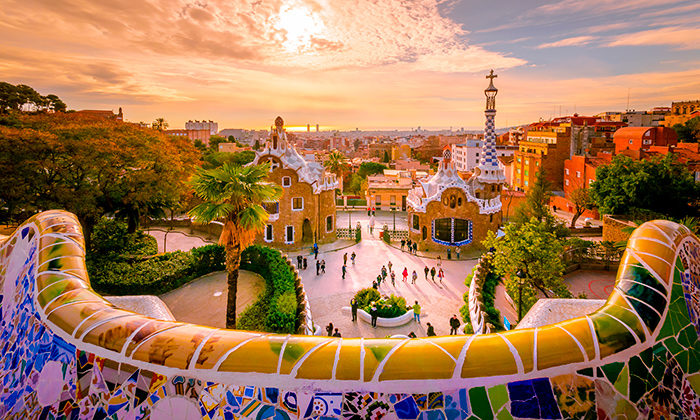
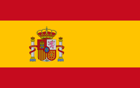

Іспанія — держава на південному заході Європи, із заморськими територіями через Гібралтарську протоку та Атлантичний океан. Її континентальна європейська територія займає більшу частину Піренейського півострова. До складу країни також входять два архіпелаги: Пітіузькі острови в Середземному морі, і Канарські острови біля узбережжя Африки в Атлантичному океані. Африканські анклави Сеута, Мелілья та Пеньон-де-Велес де ла Гомера роблять Іспанію єдиною європейською країною, яка має фізичний кордон з африканською країною (Марокко). Кілька невеликих островів в Алборанському морі також є частиною території Іспанії. Материкова частина країни омивається Середземним морем на півдні та сході, за винятком невеликої сухопутної межі з Гібралтаром; на півночі та північному сході межує з Францією (623 км) та Андоррою (63,7 км); на заході — з Португалією (1214 км) та Атлантичним океаном. З території площею 505 990 км², Іспанія є найбільшою країною Південної Європи, другою за величиною країною Західної Європи та Європейського Союзу та четвертою за розміром країною Європейського континенту. З населенням у понад 46 млн осіб, Іспанія є 4-ю за кількістю населення країною Європейського Союзу. Столиця країни — Мадрид; серед інших важливих мегаполісів Барселона, Валенсія, Севілья, Сарагоса, Малага та Більбао.
 